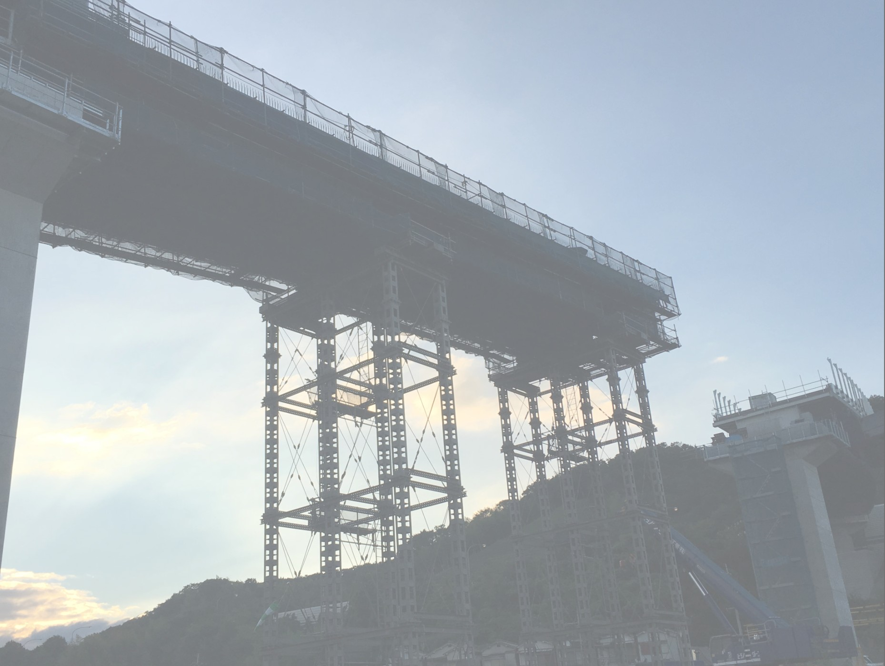

- 

1995年に創業。信頼と実績を積み重ねながら、全国各地のインフラを整備してきました。地元である大阪市阿倍野区のシンボル「あべのハルカス」の歩道橋の施工を担うまでになりました。
Construction results.


| 会社名 | 南大阪建設株式会社 |
| 代表取締役 | 上野 和久 |
| 設立年月日 | 1995年2月1日 南大阪橋梁創業 2002年4月1日 南大阪建設工業有限会社へ 2016年2月12日 南大阪建設株式会社へ |
| 資本金 | 1000万円 |
| 事業内容 | 橋梁工事業 橋梁メンテナンス業 |
| TEL | 06-6626-5858 |
| FAX | 06-6626-5868 |
| 本社所在地 | 〒545-0021 大阪府大阪市阿倍野区阪南町1-27-2 昭和町ビル7階 |